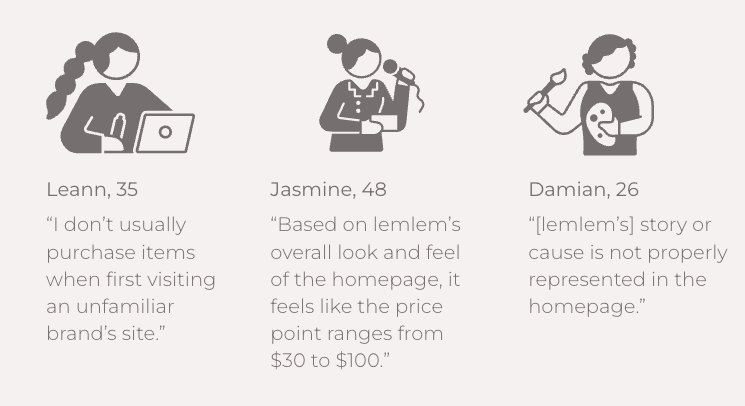

We started out with conducting a heuristic evaluation on the current website.
On the homepage, some main UI issues that we noticed that are:
- The top navigation has some confusing categories.
- There are no clear messages or call to actions above the fold.
- They have such a great cause and amazing story, but they’re not properly represented on the homepage and has been instead, tucked away into the end of their navigation.
On the product page, we noticed there are inconsistent colors and font choices. The overall design looks like a Shopify theme and is very basic, outdated, and not well-maintained.
To have a better understanding of Lemlem website’s strengths and weaknesses, we’ve conducted competitor analysis. We chose two direct and indirect competitors. Direct competitors were clearly showing their mission statement and brand story on the homepage with charts and images. Other brands were providing high-quality content imagery, and their modern and clean design adds credibility to their price point.
In order to understand the problems of the existing website and the needs of target customers in-depth, we created a user research plan and conducted interviews and surveys.
We interviewed 5 people and got similar results as in the SWOT analysis. Most of the participants said the brand story wasn't properly displayed on the homepage, and the high price didn't fit the website's overall look and feel.

35 people took part in a survey created through Google Forms.
- 82% said they would like to see a cost analysis.
- 77% said they were more interested in lemlem's product after learning more about the cause and story.
- 62% said they rarely see the "About Us" page.
Due to this research data, we have decided to place a mission statement on our home page and a cost breakdown chart on each product page.
Through user research, we were able to narrow down our target user and create our user persona.
Kelly, a product manager who lives in Los Angeles and recently married her husband who she met at a fundraising event years ago. She loves doing good in the world through donations and charity work and she wants to invest in quality clothing that she can recommend with confidence to her friends and family.